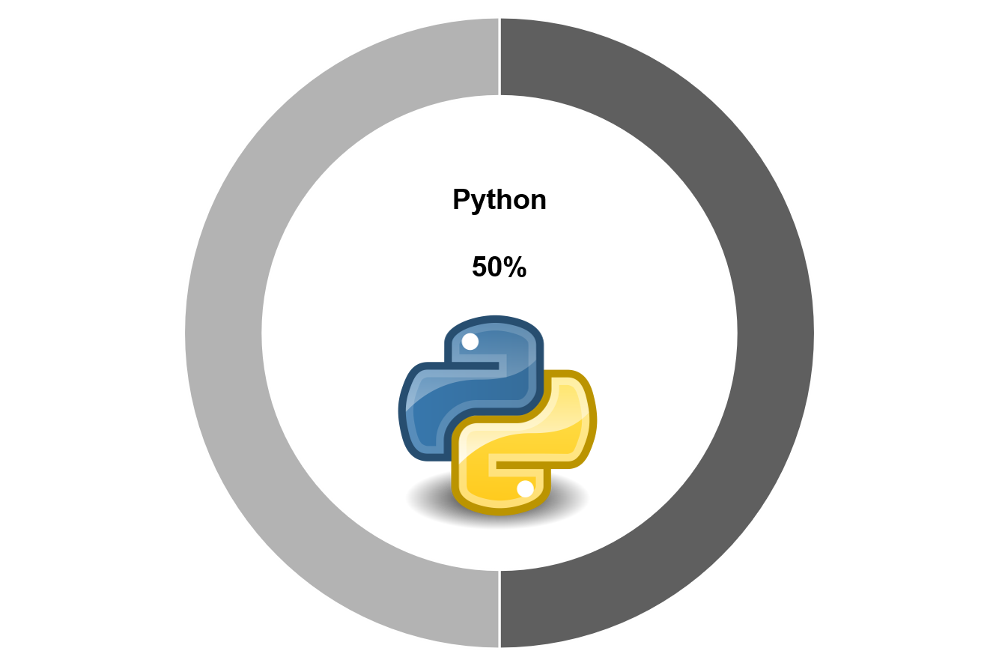
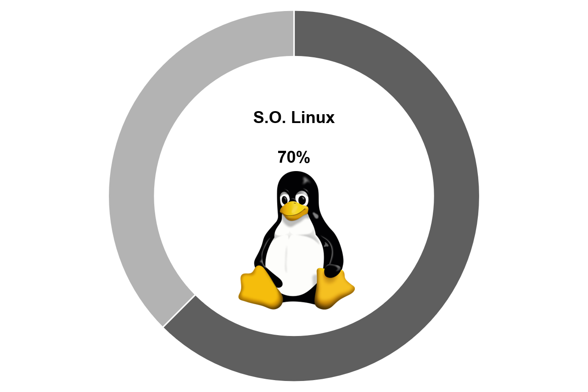
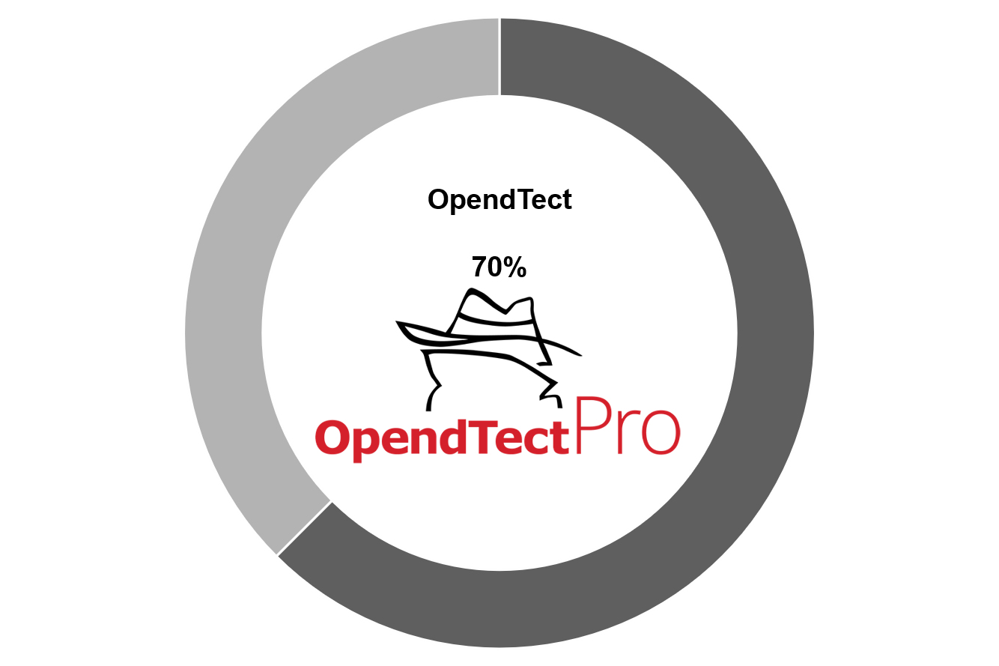
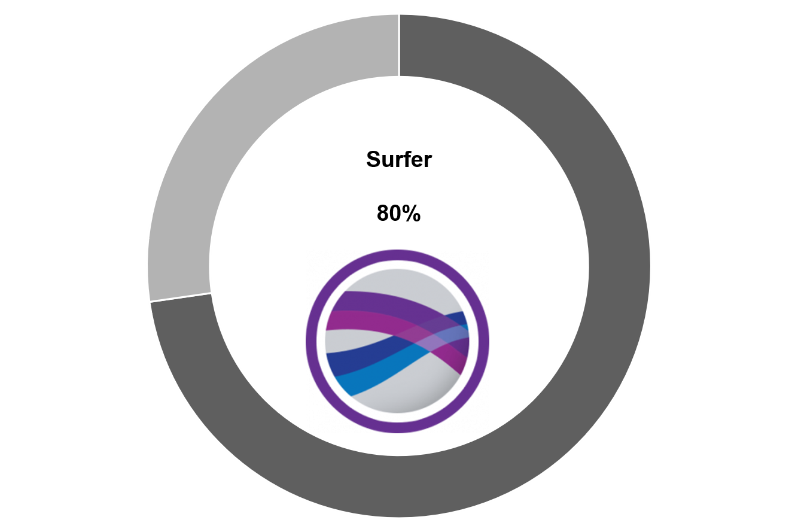
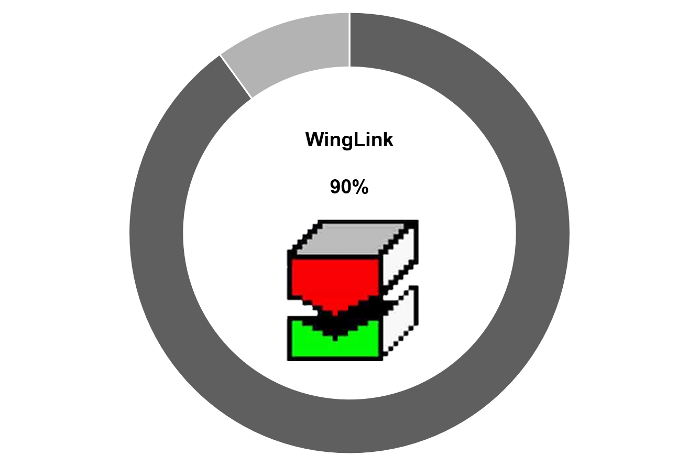
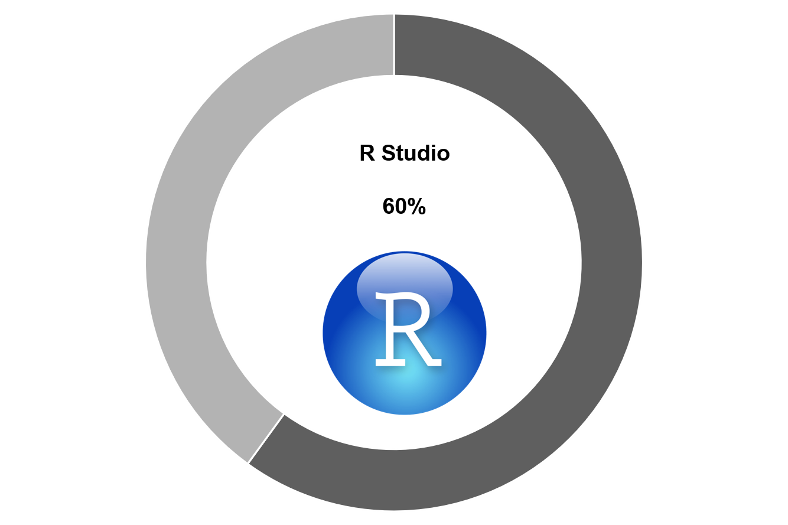
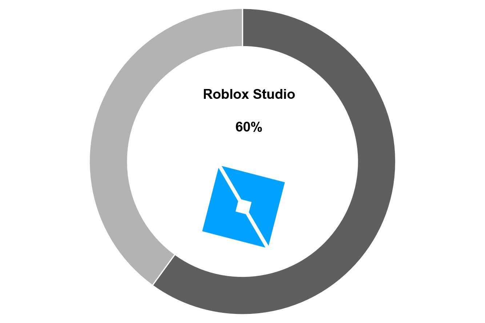

Ivonne Margarita Pinto Herrera
MAESTRA EN CIENCIAS DE LA TIERRA
¡Hola!
Soy Ingeniera en Geofísica por parte de la Universidad Olmeca y Maestra en Ciencias por parte de la
Universidad Nacional Autónoma de México, actualmente soy Maestra en Byjus Future School, escuela que se dedica a la enseñanza de
lenguajes de programación mediante la ejecución de programas y aplicaciones. Me encuentro estudiando en DevF Proffessional en Coding, para certificarme en
desarrollo web.
SOFTWARES







EXPERIENCIA LABORAL
EMGS, Electromagnetic Geoservices
Desarrollando las siguientes actividades:
- Elaboración de Modelos de Tierra con datos de densidad y velocidad utilizando el método de diferencias finitas en Seismic Unix en ambientes marinos.
- Secuencia de procesado Sísmico Sintético en SU.
- Elaboración de Modelos de Tierra usando Brickbill (software interno) para métodos electromagnéticos.
- Modelado 2.5D de datos electromagnéticos de fuente controlada en ambientes marinos (CSEM).
- Análisis de datos CSEM utilizando el lenguaje de programación Python.
Byjus Future School
Desarrollando las siguientes actividades:
- Preparación y ejecución de clases de programación para niños entre 6 y 17 años mediante JavaScript.
- Preparación y ejecución de clases de matemáticas para 3ero y 4to grado de primaria.